Regular expressions (regex) are compact pattern languages for
finding, extracting, and editing strings. In computational linguistics,
we use them to:
- locate morpheme boundaries, glosses, and tier labels;
- convert orthography to IPA;
- search for strings in ELAN;
- pre-clean corpora before NLP.
Base R uses (grepl, gsub,
gregexpr) and stringr
(str_detect, str_extract,
str_match, str_replace). stringr
is often clearer; base gives you full control. The module will primarily
use EditPad Lite, but we will also discuss the R functions.
library(stringr)We’ll be using this file dictionary.txt
Regular expressions (RegEx) are special strings of text for describing a specific pattern of interest. RegEx is often used in computer programming and database management to provide users with a powerful tool for locating and describing a desired search pattern. Linguistic programs such as ELAN are equipped with a RegEx search engine which facilitates searching through large quantities of data (especially human-annotated data which may contain formatting errors or typos). R is equipped with RegEx and there are add-ons for Excel. EditPad Lite and TextWrangler are specifically designed to take full advantage of RegEx. You can think of regular expressions as your basic search function on crack. While RegEx often seems daunting at first, this module will introduce basic RegEx functions step-by-step while providing various exercises and examples suited for natural language analysis.
Sites for testing RegEx:
- RegExp
Playground
- Zytrax Tech
Stuff
- /Reg(exp){2}lained/:
Demystifying Regular Expressions/
Basic search functions are integrated into almost every text editor
available (e.g., Notepad). Pressing Control+F (Windows) or
Command+F (Mac) is often the default shortcut key to bring
up the Find or Search function in most text
editors. This search engine is limited to basic searches of keywords,
symbols, delimiters (e.g., tabs, spaces, commas). Other text editors;
more specifically, word processors such as Microsoft Word, have more
advanced search functions.
Word allows a larger variety of search options such as:
- Matching case
- Matching white spaces
- Searching for paragraph markers
- Searching for digits only
- Searching for tabs
- Searching for letters only
- Searching for column breaks
- Searching for text in graphics
- Searching for any character
- Searching for whole words
- ‘Sounds like’ search function
Word also allows you to search for formatting directly (e.g., fonts, paragraph styles, specific languages, etc.).
I find the multi-line search panel easier to work
with.
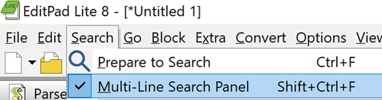
Next you’ll want to click on the Regex button and the
magnifying glass button to highlight your matches.
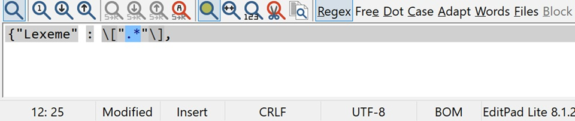
The Count Matches button is one of the more useful
functions.
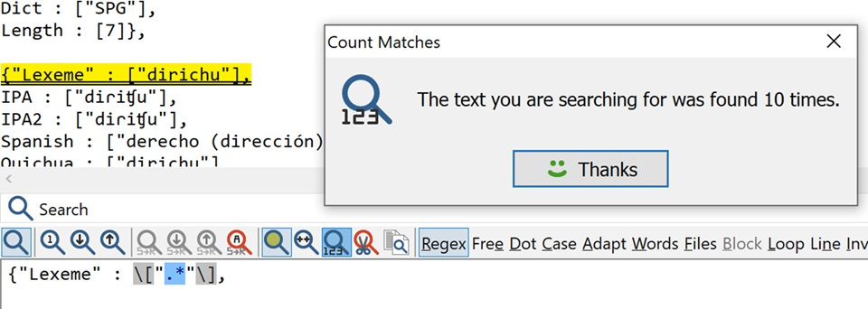
As is the Copy function.
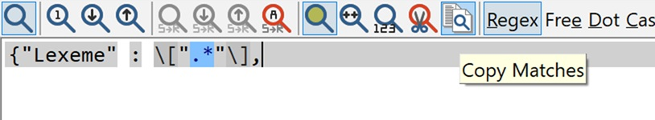
Also the Replace All function.
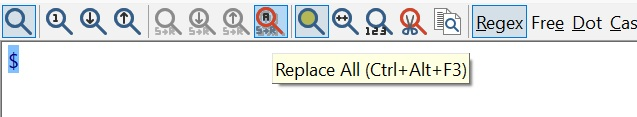
For Mac, consider one of the following:
You may have to enable grep (Global Regular Expression
Print).
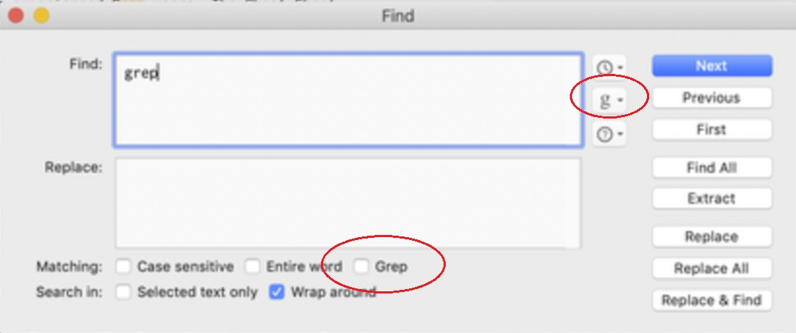
We’ll use the following text for our search and regex practice. Copy/paste it into your text editor or assign it to an object in R.
123456789012345678901234567890123456789012345678901234567890
abcdefghijklmnopqrstuvwxyz1234567890
caaaat
abcdefghijklmnopqrstuvwxyz1234567890
123456789012345678901234567890123456789012345678901234567890
abcdef123456
abc1267
It was a dark and stormy night; the rain fell in torrents — except at
occasional intervals, when it was checked by a violent gust of wind
which swept up the streets (for it is in London that our scene lies),
rattling along the housetops, and fiercely agitating the scanty flame of
the lamps that struggled against the darkness.
-Paul Clifford (1830:1)
ˈhaʊ ˈmʌtʃ ˈwʊd kʊd ə ˈwʊdˌtʃʌk ˈtʃʌk ˈɪf ə ˈwʊdˌtʃʌk ˈkʊd ˈtʃʌk ˈwʊd
The cat in the hat swung the bat then rolled on the mat after biting Pat.
The cat in the hat swung the bat then rolled on the mat after biting Pat whose password is 35at130t.
Mas leñatami traimuna coznagapa.
Nuestro alpaca buenomi sembrangapa.
Ese puertaka puro tablami.
Ese alfombraka bonitowami.
Ese hornota tenichi ese leñawanmi ocupanchi.
Cuanto platotata teninchi comidapak?
Tal vez otro ollo grandita teninguichu?
Ondepita ese piedra cuchillota afilangapaka?
Teniguichu otro kallanata tostangapa tostadota?
The colors green and blue are the same word in language X, while the colours red and yellow are different. Color is a complicated concept.
1000000, 1’000.000, 1,000,000
6125487, 7’456.987, 9,789,321
The bomb when booooooooom! The boom was so loud!
BOOM, BOOOOOM, Booom, or BoOoOm
459-1670; 641-6021; 893-5581; 491-9503; 876-9894
boom, booom, boooom, booooom, boooooom, booooooom, boooooooom, booooooooom
bom, boom, booom, boooom, booooom, boooooom, booooooom, boooooooom, booooooooom, booooooooooooooooooooooooooooooooooooooooom
The dog ate the cat who chased the rat that ate the Pat’s mat (Pat’s black mat).
$1,302,928.13; $1’302.928,25; $3’354.144,32
cat, dogs, frog, word, phone, regex, ling
cat bear ape dog tiger monkey donkey badger
left hand; right hand; Left hand; Right hand; hand; left right; handed; left handed
459-1670; 641.6021; 893 5581; 491-9503; 876.9894; 555 2323; 877-5544; 899.1000; 456 2999; 123-4567
(360)459-1670; 641.6021; 8935581; 491-9503; 876.9894; 555 2323; 877-5544; 899.1000; (323)456 2999; 123-4567
1.) #d4d4d2
2.) #1a1a1a
3.) #ed20ba
4.) #4c8bff
5.) #3cff00
1.) #15DC1490242AB67B
2.) #whatsthatsmell
3.) #mr20lb
4.) #15DC1490242AB67B”
aatkaaaata/ta539tThis is equivalent to using Ctrl+F (Windows) or
Command+F (Mac) in a text editor—no special pattern rules,
just literal string matches.
Brackets match any single character inside them.
| Pattern | What it matches |
|---|---|
[35] |
any single 3 or 5 |
[abc123] |
any a, b, c,
1, 2, or 3 |
[a] |
just the lowercase letter a |
Ranges use a dash inside brackets to match a span.
| Pattern | Matches |
|---|---|
[a-d] |
a, b, c,
d |
[1-5] |
1 through 5 |
[a-c0-2] |
a, b, c,
0, 1, 2 |
Negation: [^ ] matches anything
except the characters inside.
| Pattern | Matches anything except… |
|---|---|
[^35] |
3 or 5 |
[^abc123] |
a, b, c, 1, 2, 3 |
[^1-5] |
digits 1–5 |
Vowel patterns:
a[eiouy] → diphthongs starting with
a[aeiouy][aeiouy] → any vowel sequence (note: includes
ee, which is not a diphthong)[a-z]ʊd → words in IPA ending with ʊd (words rhyming
with e.g., would)[^c]at → rhymes with cat but not
cat itselfNote: In real-world text processing, practicality is better than precision—don’t overengineer a perfect regex if a simpler one is good enough for the task.
The following meta characters are used to indicate that you want your search string to only target values at the beginning or end of a string.
^ (caret) outside of
a pair of brackets: locate strings at the beginning of a line or
string.$ (dollar sign)
outside of a pair of brackets: locate strings at the
end of a line or string.In a single-line search, these work up until a line break
(\n).
Examples:
| Pattern | Meaning |
|---|---|
^[I] |
Paragraph-initial I or words starting with
I (e.g., It, It was) |
^[I]t was |
Match specifically “It was” at the start of a paragraph or line |
^[-] |
Paragraph-initial dash |
[.]$ |
End period |
ss[.]$ |
String ending with “ss.” |
[)]$ |
Final closed bracket ) at the end of a string |
[.?!]$ |
End punctuation useful for locating the end of annotations or sentences |
. (period) outside of brackets:
matches any single character except a line break.
.... → matches any four characters in a
row..[lL] → any character followed by
l or L.? — Zero
or one occurrenceMatches when the preceding character occurs 0 or 1 time only.
[Cc]olou?r → matches “color” or “colour”.1'?'?,?000\\.?,?000 → matches “1,000,000” in
both American and Spanish number formats.[0-9]{1}'?'?,?[0-9]{3}\\.?,?[0-9]{3} → matches
“6125487”, “7’456.987”, “9,789,321”.* — Zero
or more occurrencesMatches when the preceding character occurs 0 to infinite times.
[bB]o*m → matches “bm”, “bom”, “boom”,
“booooom”, etc. (includes zero o).+ — One
or more occurrencesLike *, but requires at least one occurrence.
[bB]o+m → matches “boom”, “boooom” but
not “bm”.[bB]o+m[^a-z] → matches “boom” but not “bomb”
or “bmb”.[bB][oO]+[mM][^a-z] → matches “BOOM”,
“BOOOOOM”, “Booom”, “BoOoOm”.{n} —
Exact number of occurrencesDefine the exact repetition count of the preceding character.
[bB][oO]{2}[mM][^a-z] → matches “boom” with
only two o’s.[0-9]{3}[-. ][0-9]{4} → matches phone numbers
like “459-1670”, “641.6021”, “893 5581”.{n,m} —
Range of occurrencesDefine a lower and upper bound for repetitions.
[bB][oO]{2,6}[mM][^a-z] → matches “boom”
through “boooooom”, but not “booooooom” or longer.{n,} —
Lower bound onlyDefine the minimum number of repetitions, with no upper limit.
[bB][oO]{2,}[mM][^a-z] → matches “boom”,
“booom”, all the way up to “booooooooooooooooooooooom”, but
not “bom”.Meta characters need to be escaped (with a backslash) when you want them to be treated literally.
| Meta | Literal |
|---|---|
. |
\. |
^ |
\^ |
? |
\? |
$ |
\$ |
[ |
\[ |
| |
\| |
] |
\] |
( |
\( |
) |
\) |
+ |
\+ |
* |
\* |
{ |
\{ |
} |
\} |
Example: to capture anything inside literal
parentheses, use \(.*\) (the parentheses are escaped).
\(.*\)"\\(.*\\)"Monetary values (≤ 9,999,999.99) with different thousands/decimal separators:
\$[0-9]{1}[',.’][0-9]{3}[',.’][0-9]{3}[.,’][0-9]{2}"\\$[0-9]{1}['.,’][0-9]{3}['.,’][0-9]{3}[.,’][0-9]{2}"x <- c("$1,302,928.13", "$1’302.928,25", "$3’354.144,32", "$12.34")
pat_money <- "\\$[0-9]{1}['.,’][0-9]{3}['.,’][0-9]{3}[.,’][0-9]{2}"
stringr::str_detect(x, pat_money)## [1] TRUE TRUE TRUE FALSECharacter classes allow you to match specific sets of characters
without listing them all individually.
R uses double backslashes (\\) in string
patterns because the first backslash escapes the second in the R
string,
and the second is passed to the regex engine.
| Abbreviation | Matches | Example Matches |
|---|---|---|
\w |
Any letter, digit, or underscore (a–z,
A–Z, 0–9, _) |
word_1, A3 |
\d |
Any digit (0–9) |
5, 42 |
\s |
Any whitespace (space, tab, line break) | " ", "\t", "\n" |
\b |
Word boundary | Between cat and space in "cat dog" |
Negative (uppercase) versions:
| Abbreviation | Matches anything except… | Example Matches |
|---|---|---|
\W |
Anything that is not a–z, A–Z,
0–9, _ |
!, @, space |
\D |
Anything that is not a digit | a, %, space |
\S |
Anything that is not whitespace | a, 3, ! |
\B |
Anything that is not a word boundary | Between c and a in "cat" |
library(stringr)
txt <- c(
"word",
"word.",
" space",
"1234",
"no_space",
"mid-day"
)
# Four-letter words using explicit letters
stringr::str_detect(txt, "\\b[a-zA-Z]{4}\\b")## [1] TRUE TRUE FALSE FALSE FALSE FALSE# Four-letter words using \w (includes digits/underscore)
stringr::str_detect(txt, "\\b\\w{4}\\b")## [1] TRUE TRUE FALSE TRUE FALSE FALSE# Detect any digit
stringr::str_detect(txt, "\\d")## [1] FALSE FALSE FALSE TRUE FALSE FALSE# Detect any whitespace
stringr::str_detect(txt, "\\s")## [1] FALSE FALSE TRUE FALSE FALSE FALSE# Detect non-digits
stringr::str_detect(txt, "\\D")## [1] TRUE TRUE TRUE FALSE TRUE TRUE# Detect word boundaries before/after 'word'
stringr::str_detect(txt, "\\bword\\b")## [1] TRUE TRUE FALSE FALSE FALSE FALSEFour-letter words:
Pattern (engine): \b[a-zA-Z]{4}\b
Pattern (engine): \b\w{4}\b
R strings: "\\b[a-zA-Z]{4}\\b",
"\\b\\w{4}\\b"
|)
and GroupingThe OR meta character (|) allows you to
search for one pattern or another.
Parentheses () are used to group expressions.
Syntax:
(expression1|expression2|expression3)
Examples:
- (cat|dog|monkey) → matches either "cat",
"dog", or "monkey".
- ([lL]eft |[rR]ight )hand\b → matches
"left hand", "Right hand",
"Left hand", "right hand", but not
"left right" or "left handed".
library(stringr)
hands <- c(
"left hand", "right hand", "Left hand", "Right hand",
"hand", "left right", "handed", "left handed"
)
stringr::str_detect(hands, "([lL]eft |[rR]ight )hand\\b")## [1] TRUE TRUE TRUE TRUE FALSE FALSE FALSE FALSESometimes you want to match multiple valid formats for phone
numbers.
The OR meta character (|) lets you combine
patterns into one expression.
Example:
[\\d]{3}[-. ][\\d]{4} → matches numbers
like:
459-1670641.6021893 5581([\\d]{3}[-. ][\\d]{4}|[\\d]{7})library(stringr)
phones <- c(
"459-1670", # dash
"641.6021", # period
"893 5581", # space
"4919503", # 7 digits, no separator
"8769894", # 7 digits, no separator
"123-4567" # dash
)
# Pattern for ###-#### OR #######
pat_phone_or <- "([0-9]{3}[-. ][0-9]{4}|[0-9]{7})"
stringr::str_detect(phones, pat_phone_or)## [1] TRUE TRUE TRUE TRUE TRUE TRUEExplanation:
[0-9]{3} → exactly three digits.[-. ] → a dash (-), period
(.), or space ([0-9]{4} → exactly four digits.| → logical OR, meaning the engine will try the pattern
on the left or the pattern on the right.[0-9]{7} → exactly seven digits in a row with
no separators.This pattern ensures that the regex will match either: 1. Three digits, followed by a dash/period/space, followed by four digits; or 2. Seven digits in a row.
Test Example in R:
phones <- c(
"459-1670", # matches format 1
"641.6021", # matches format 1
"893 5581", # matches format 1
"4919503", # matches format 2
"8769894", # matches format 2
"123-4567", # matches format 1
"12-34567" # does NOT match
)
pat_phone_or <- "([0-9]{3}[-. ][0-9]{4}|[0-9]{7})"
stringr::str_detect(phones, pat_phone_or)## [1] TRUE TRUE TRUE TRUE TRUE TRUE FALSESometimes the separator between number groups may be a dash, period,
space — or nothing at all.
We can allow this flexibility using an OR group that
also includes an empty option.
Pattern: [0-9]{3}(-|.| |)[0-9]{4}
Explanation: - [0-9]{3} → exactly three
digits. - (-|\.| |) → dash (-), period
(.), space (), or nothing
(the empty option after the last |). -
[0-9]{4} → exactly four digits.
library(stringr)
phones2 <- c(
"459-1670", # dash
"641.6021", # period
"893 5581", # space
"4919503", # no separator
"8769894", # no separator
"4591670", # no separator
"459--1670" # invalid (double dash)
)
# Match 3 digits + optional separator + 4 digits
pat_opt_sep <- "^[0-9]{3}(-|\\.| |)[0-9]{4}$"
stringr::str_detect(phones2, pat_opt_sep)## [1] TRUE TRUE TRUE TRUE TRUE TRUE FALSENotes: The empty alternative in the group
(-|\.| |) is what allows “nothing” as a valid option. In R
strings, the period . must be escaped as \\.
to mean a literal period rather than “any character”.
A HEX colour code is a string starting with # followed
by exactly six hexadecimal characters. Valid characters are digits
0–9 and letters a–f (case-insensitive).
If we use patterns that are too general, we will match many unwanted strings.
Examples of overly broad patterns: - #.+ → matches any
# followed by one or more characters. - \w.+ →
matches any word character followed by one or more characters. -
#[a-z0-9].+ → matches # followed by a
letter/digit, then anything.
library(stringr)
hexes <- c(
"#d4d4d2","#1a1a1a","#ed20ba","#4c8bff","#3cff00",
"#15DC1490242AB67B","#whatsthatsmell","#mr20lb",
"#abc","#ABCDEF1", "#1234567"
)
#Note that there are 3 patterns here
broad_patterns <- c("#.+","\\w.+","#[a-z0-9].+")
#lapply is like a for loop and iterates each pattern over each item in the hexes string
lapply(broad_patterns, function(i) stringr::str_detect(hexes, i))## [[1]]
## [1] TRUE TRUE TRUE TRUE TRUE TRUE TRUE TRUE TRUE TRUE TRUE
##
## [[2]]
## [1] TRUE TRUE TRUE TRUE TRUE TRUE TRUE TRUE TRUE TRUE TRUE
##
## [[3]]
## [1] TRUE TRUE TRUE TRUE TRUE TRUE TRUE TRUE TRUE FALSE TRUEFYI the for loop equivlant would be:
#The for loop equivalant would be:
for (i in broad_patterns) {
print(stringr::str_detect(hexes, i))
}## [1] TRUE TRUE TRUE TRUE TRUE TRUE TRUE TRUE TRUE TRUE TRUE
## [1] TRUE TRUE TRUE TRUE TRUE TRUE TRUE TRUE TRUE TRUE TRUE
## [1] TRUE TRUE TRUE TRUE TRUE TRUE TRUE TRUE TRUE FALSE TRUE#If we know that a valid HEX colour code contains exactly six
characters after the #,
we can use a pattern with a quantifier to enforce this
rule.
Pattern: #.{6}$
Explanation: - # → literal hash symbol.
- . → any character except a newline. - {6} →
exactly six occurrences. - $ → end of the line
This pattern will remove some false positives (e.g.,
#abc, #1234567) but will still allow invalid
characters like g or z.
library(stringr)
hexes <- c(
"#d4d4d2","#1a1a1a","#ed20ba","#4c8bff","#3cff00",
"#15DC1490242AB67B","#whatsthatsmell","#mr20lb",
"#abc","#ABCDEF1", "#12345678")
stringr::str_detect(hexes, "#.{6}$")## [1] TRUE TRUE TRUE TRUE TRUE FALSE FALSE TRUE FALSE FALSE FALSETo ensure the pattern matches only valid HEX colour
codes,
we need to restrict the allowed characters to hexadecimal digits:
0–9 and a–f (case-insensitive).
Lowercase only: #[a-f\d]{6}
a-f → lowercase hexadecimal letters.\d → digits 0–9.{6} → exactly six characters.Case-insensitive (upper and lower case):
#[A-Fa-f0-9]{6}
A-F → uppercase hexadecimal letters.a-f → lowercase hexadecimal letters.0-9 → digits.$ → end of the line.In R:
library(stringr)
pat_hex_lower <- "^#[a-f0-9]{6}$"
pat_hex_any <- "^#[A-Fa-f0-9]{6}$"
hexes <- c(
"#d4d4d2","#1a1a1a","#ed20ba","#4c8bff","#3cff00",
"#15DC1490242AB67B","#whatsthatsmell","#mr20lb",
"#abc","#ABCDEF1"
)
data.frame(
hex = hexes,
lower_only = stringr::str_detect(hexes, pat_hex_lower),
any_case = stringr::str_detect(hexes, pat_hex_any)
)## hex lower_only any_case
## 1 #d4d4d2 TRUE TRUE
## 2 #1a1a1a TRUE TRUE
## 3 #ed20ba TRUE TRUE
## 4 #4c8bff TRUE TRUE
## 5 #3cff00 TRUE TRUE
## 6 #15DC1490242AB67B FALSE FALSE
## 7 #whatsthatsmell FALSE FALSE
## 8 #mr20lb FALSE FALSE
## 9 #abc FALSE FALSE
## 10 #ABCDEF1 FALSE FALSENotes: Anchors ^ and $ ensure the pattern matches
the entire string, not just part of it.
This eliminates false positives like #ABCDEF1 (too long) or #GHIJKL
(invalid characters).
Even with the correct six-character HEX pattern, we may still
accidentally match part of a longer string.
For example, in #abc12345, the first seven characters
contain a valid six-character sequence, but it’s part of a longer
token.
To prevent this, we can use the word boundary meta
character \b at the end of the pattern.
Pattern: #[A-Fa-f0-9]{6}\b
Explanation: - # → literal hash. -
[A-Fa-f0-9]{6} → exactly six valid hex characters
(case-insensitive). - \b → word boundary ensures the match
ends cleanly (not in the middle of a larger word).
In R:
library(stringr)
hexes <- c(
"#d4d4d2","#1a1a1a","#ed20ba","#4c8bff","#3cff00",
"#15DC1490242AB67B","#whatsthatsmell","#mr20lb",
"#abc","#ABCDEF1"
)
stringr::str_detect(hexes, "^#[A-Fa-f0-9]{6}\\b$")## [1] TRUE TRUE TRUE TRUE TRUE FALSE FALSE FALSE FALSE FALSENotes:
\b matches a position between a word character and a
non-word character.
Anchors ^ and $ ensure the entire
string is the hex code, while \b is helpful if matching
inside larger text blocks where the code might be followed by
punctuation or spaces.
Shorthand character classes can make patterns more concise.
Here we’ll match monetary values like $1,302,928.13 that
use different thousands and decimal separators.
Pattern 1 — Using \d (digit shorthand):
\$[\d]{1}['.,’][\d]{3}['.,’][\d]{3}[.,][\d]{2}
Pattern 2 — Using explicit digit range
[0-9]:
$[0-9]{1}['.,’][0-9]{3}['.,’][0-9]{3}[.,][0-9]{2}
Explanation: - \$ → literal dollar sign
(escaped). - [\d]{1} → exactly one digit. -
['.,] → thousands separator: apostrophe, comma, or period.
- [\d]{3} → exactly three digits. - Repeat the separator +
3 digits for millions and thousands groups. - [.,] →
decimal separator: period or comma. - [\d]{2} → exactly two
decimal digits.
In R:
library(stringr)
money_values <- c(
"$1,302,928.13",
"$1’302.928,25",
"$3’354.144,32",
"$12.34"
)
pat_money_short <- "\\$\\d{1}['.,’]\\d{3}['.,’]\\d{3}[.,]\\d{2}"
data.frame(
value = money_values,
detect = stringr::str_detect(money_values, pat_money_short)
)## value detect
## 1 $1,302,928.13 TRUE
## 2 $1’302.928,25 TRUE
## 3 $3’354.144,32 TRUE
## 4 $12.34 FALSENotes: The shorthand s easier to read, but [0-9] is
more explicit and behaves the same.
This pattern works for both US (1,302,928.13) and European/Latin
American formats (1’302.928,25).
We’ll be using ELAN for this demo.
Download the following files:
EAF file
Video
The following was used, in part, during the publication of this
paper:
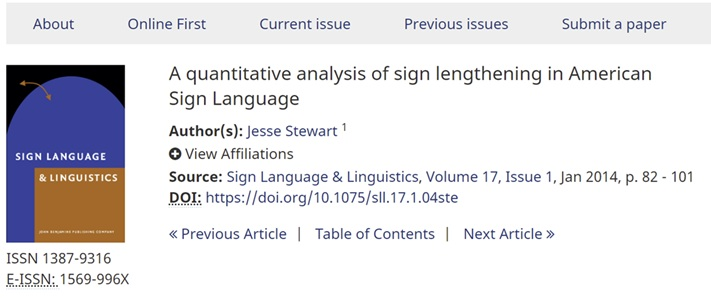
Paper
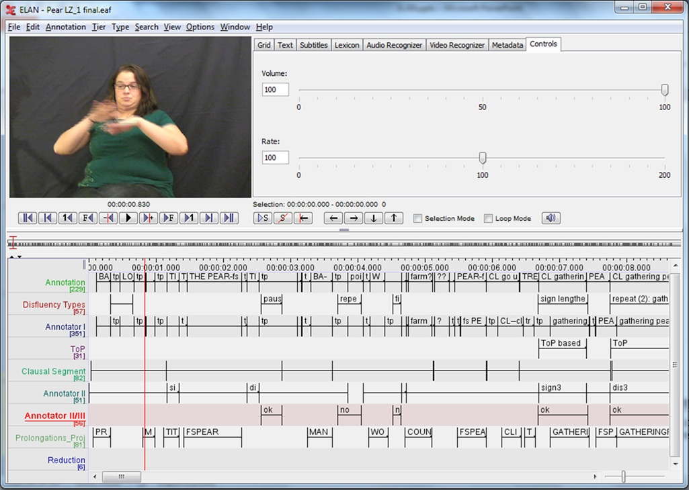
In this dataset, some annotations are marked BA (body-anchored sign) and others CL (classifier construction).
Because this data was annotated by humans, there are a few inconsistencies. Our goal is to clean these up so that the annotation labels are uniform and consistent.
The standard form is BA-SIGN (Body anchored) or
CL-SIGN (classifers).
Yet, the data was full of errors such as: BA -SIGN
BA - SIGN
BA- SIGN
BA SIGN
BA SIGN
BA--SIGN
BA --SIGN
BA-- SIGN
BA -- SIGN
How do we write a regular expression to locate all of these errors
and the standard form?
Make sure the Regular Expression checkbox is checked.
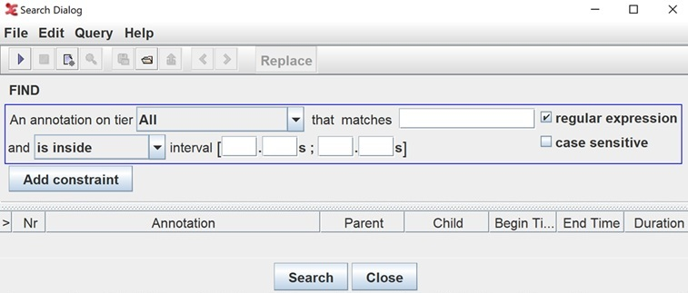
^BA *-* *
^ (caret)
– Start of the string or line. This means the match must begin right at
the start, not in the middle.)
BA
– The literal letters B and A.
— ^BA Together they mean “find any string that starts with
BA.”
* (space followed by *)
– The space means “look for an actual space character”.
– * means “zero or more of the preceding thing”.
— Together: “Zero or more spaces”.
— This allows matches even if there’s no space or multiple spaces after
BA.
-* – The dash (-) is the literal hyphen
character.
– * means zero or more of the preceding thing.
— Together this means “zero or more hyphens”.
— So far, this means it matches BA whether or not a hyphen
follows (e.g., BA-, BA--,
BA).
In plain English, this means: Find any string that starts with
BA, optionally followed by spaces, optionally followed by
one or more hyphens, and optionally followed by spaces.
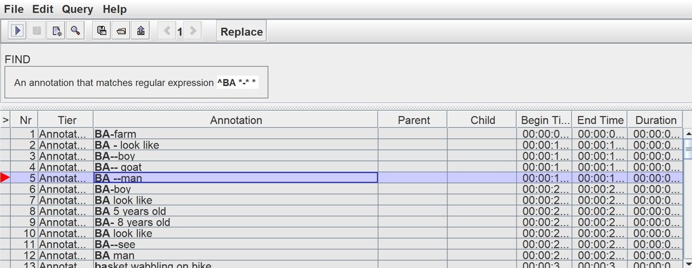
Replace the finding with BA-:
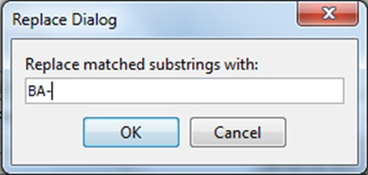
Replacement results:
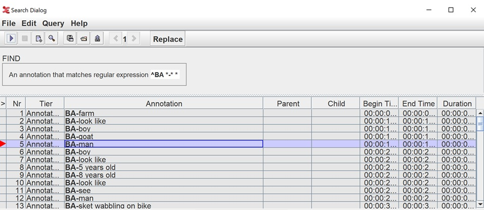
In this activity, we will use regular expressions to
convert Spanish orthography into broad IPA
transcription.
We’ll work with Latin American Spanish (seseo, yeísmo).
We will attempt to transcribe the following words:
queso, ‘cheese’; guitarra, ‘guitar’;
güiro, ‘type of instrument’; agua, ‘water’;
jefe, ‘boss’; niño, ‘child’; lluvia, ‘rain’;
casa, ‘house’; guerra, ‘war’; guapo,
‘hansome’; cerveza, ‘beer’; hablar, ‘speak’;
rey, ‘king’; arroyo, ‘a dry stream’; Yépez,
‘a common last name’; y, ‘and’; abierto ‘open’,
ambos ‘both’
x <-c("queso", "guitarra", "güiro", "agua", "jefe","niño","lluvia", "casa","guerra","guapo", "cerveza", "hablar", "rey", "arroyo", "Yépez", "y","abierto", "ambos")Key teaching points:
R Code
# Function: Convert orthographic Spanish to broad IPA
to_ipa <- function(orth) {
x <- tolower(orth) # Converts all text to lowercase - very important!
#Note: `perl = TRUE` tells R to use the PCRE (Perl Compatible Regular Expressions) engine. This enables more advanced RegEx features like positive look ahead (?=) and positive look behind (?<=).
# --- ORDER MATTERS: handle longer/more specific patterns first ---
# 1) Affricates and digraphs
x <- gsub("ch", "tʃ", x, perl = TRUE) # ch → tʃ
x <- gsub("ll", "ʎ", x, perl = TRUE) # yeísmo: ll → ʝ; zheísmo: ll → ʒ
# 2) 'qu' and 'c' alternations (keep vowels)
x <- gsub("qu(?=[ieíé])", "k", x, perl = TRUE) # que/qui → ke/ki → k + vowel
x <- gsub("c(?=[ieíé])", "s", x, perl = TRUE) # ce/ci → s (seseo)
x <- gsub("c", "k", x, perl = TRUE) # ca/co/cu → k
# 3) g/j: velar fricative /x/ before e,i; hard g elsewhere
x <- gsub("gü", "gw", x, perl = TRUE) # güe/güi → gwe/gwi
x <- gsub("gue", "ge", x, perl = TRUE) # silent u
x <- gsub("gui", "gi", x, perl = TRUE) # silent u
x <- gsub("j", "x", x, perl = TRUE) # j → x
# 4) Cluster simplification
x <- gsub("gua", "wa", x, perl = TRUE) # agua → awa
# 5) z and b/v neutralization
x <- gsub("z", "s", x, perl = TRUE) # seseo: z → s
x <- gsub("[bv]", "b", x, perl = TRUE) # b and v merge (b isn't necessary but deal)
# 6) ñ, y (consonantal), h
x <- gsub("ñ", "ɲ", x, perl = TRUE)
x <- gsub("(?<=[aeiouáéíóú])y(?=[aeiouáéíóú])", "ʎ", x, perl = TRUE) #?<= positive look behind, ?= positive look ahead
x <- gsub("(?<=[a-záéíóú])b(?=[a-záéíóú])", "β", x, perl = TRUE) #?<= positive look behind, ?= positive look ahead
x <- gsub("(?<=[mn])β", "b", x, perl = TRUE) #?<= positive look behind, ?= positive look ahead
x <- gsub("^y(?=[aeiouáéíóú])", "ʎ", x, perl = TRUE)
x <- gsub("y\\b", "i", x, perl = TRUE)
x <- gsub("h", "", x, perl = TRUE)
# 8) Rhotics — do last
x <- gsub("r", "ɾ", x, perl = TRUE) # elsewhere → tap
x <- gsub("ɾɾ", "r", x, perl = TRUE) # trill
x <- gsub("^ɾ", "r", x, perl = TRUE) # word-initial
x
}
# Example data
words <- c("queso", "guitarra", "güiro", "agua", "jefe","niño","lluvia", "casa","guerra","guapo", "cerveza", "hablar", "rey", "arroyo", "Yépez", "y", "abierto", "ambos")
to_ipa(words)## [1] "keso" "gitara" "gwiɾo" "awa" "xefe" "niɲo" "ʎuβia"
## [8] "kasa" "gera" "wapo" "seɾβesa" "aβlaɾ" "rei" "aroʎo"
## [15] "ʎépes" "i" "aβieɾto" "ambos"Convert this JSON file to a wordlist using RegEx. Show your
work.
Dictionary.txt
Results should look like this:
coluhua
curiusu
dirichu
Now with the following orthography-to-IPA conversions, create a new column with the IPA transcriptions of each word.
ñ→ɲ
ngue→ngi
ryn→ɾin
hua→wa
gua→wa
gue→we
ch→ʧ
sh→ʃ
ll→ʒ
(rr|^r)→@
r→ɾ
@→ʐ
ɾ$→ɾ
cona→kuna
ce→se
ci→si
ca→ka
co→ko
cc→ks
cu→ku
cpi→kpi
c→k
cʒ→kʒ
cl→kl
ct→kt
cʧ→kʧ
cʧ→kʧ
cs→ks
cr→kɾ
cɾ→kɾ
qu→k
x→ks
hu→xu
gui→gi
j→x
-y-→ i
y→ i
y→i
y$→i
ɾy→ɾi
my→mi
me→mi
chon→ʧun
nosotɾoʃpa→nosotɾospa
spata→ʃpata
spami→ʃpami
spame→ʃpami
ny→ni
mary→maɾi
chy→ʧi
py→pi
y→j
by→bi
nguy→ngi
gry→gɾi
shy→ʃi
chary→ʧaɾi
siky→siki
niky→niki
kuty→kuti
^v→b
v→b
v→β
^z→s
z→s
ts→z
tz→z
aj→ai
aw→au
aia→aja
ajai→aiai
aua→awa
auo→awo
aue→awe
aiu→aiu
aui→awi
aie→aje
í→i
é→e
á→a
ó→o
ú→u
g→g
weɾba→geɾba
wiɾba→giɾba
(\\(|\\)|-|_|h|\\.|,|;|¿|!|\\?|'||\\|¡|\\[|\\]|\n)→
No credit will be given for manual list creation or copying the IPA from the JSON file